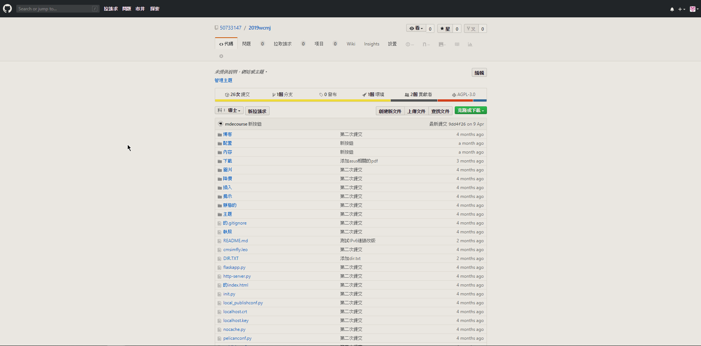
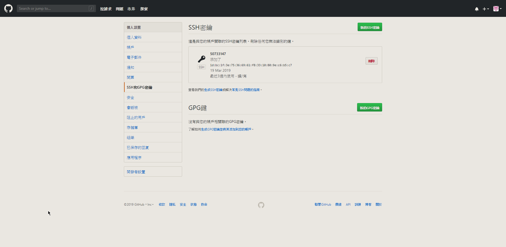
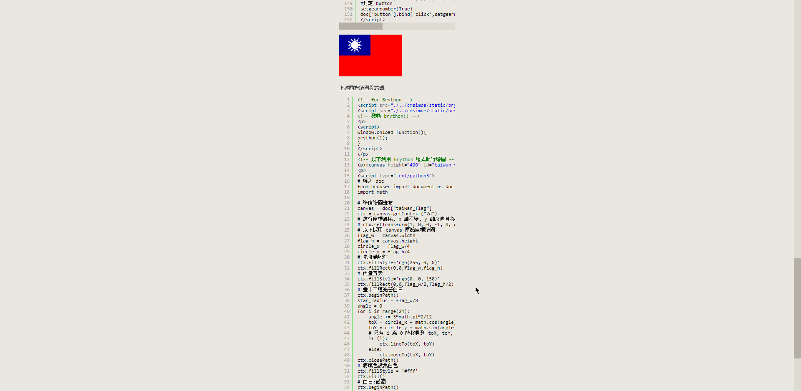
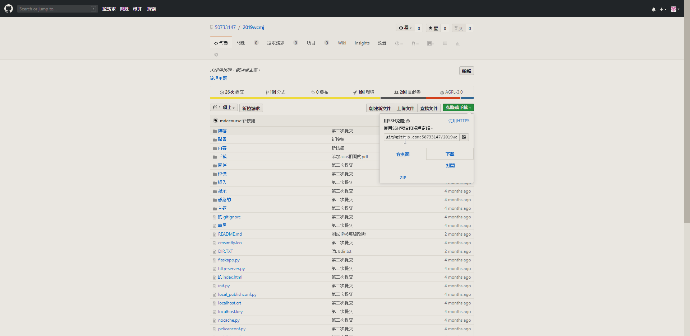
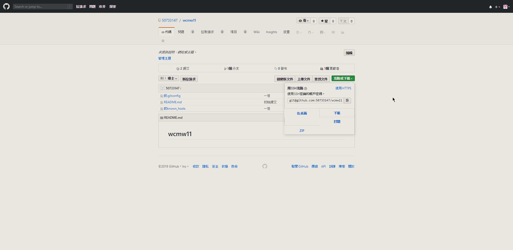
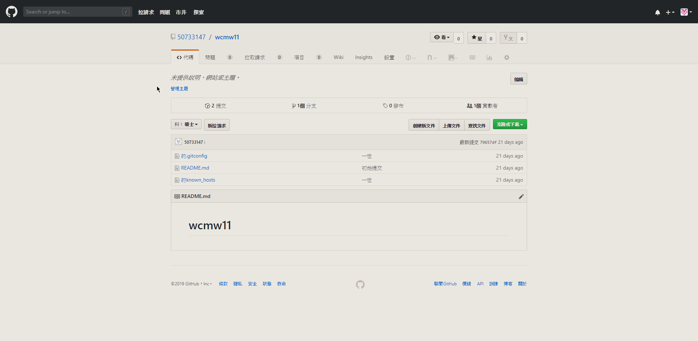
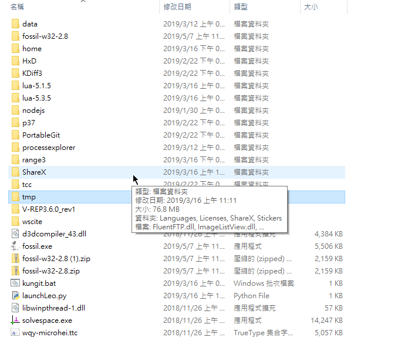
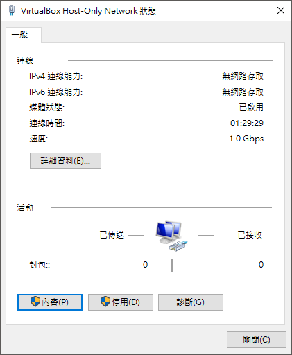
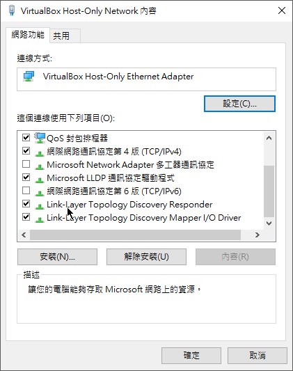

內容1:上了這一學期我學到了如何處理網路連線的簡單問題也知道了學習之三大要素為:學思 用
在這堂課程中我已經學習到了如何在自己的隨身碟建立隨身程式系統
了解 git 以 https 連線時, proxy 將採用那一個檔案中的設定
學會如何採用 ssh 模式維護 github 上的倉儲
學習到了如何打指令到電腦中例如: 用cmd命令提示字元
學習到了如何用shareX拍照:按CTRL+Print scr 拍影片:按shift+Print scr
學習到了在 CMSimfly 中上傳檔案, 引用檔案上傳圖檔, 引用圖檔 嵌入 Youtube 影片
也學習到了如何編輯網站內容
學習到了如何放上我國的國家精神國旗
以下是這學期所學的所有內容照片








